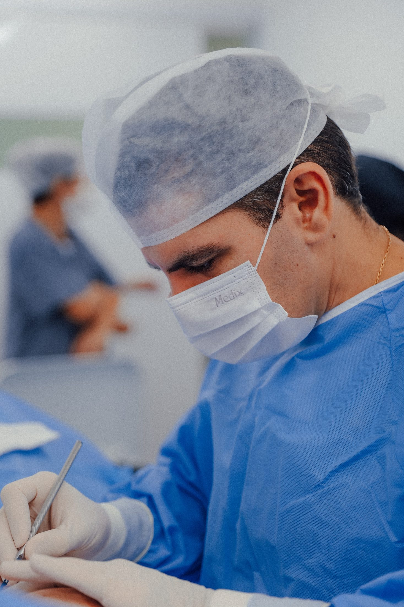
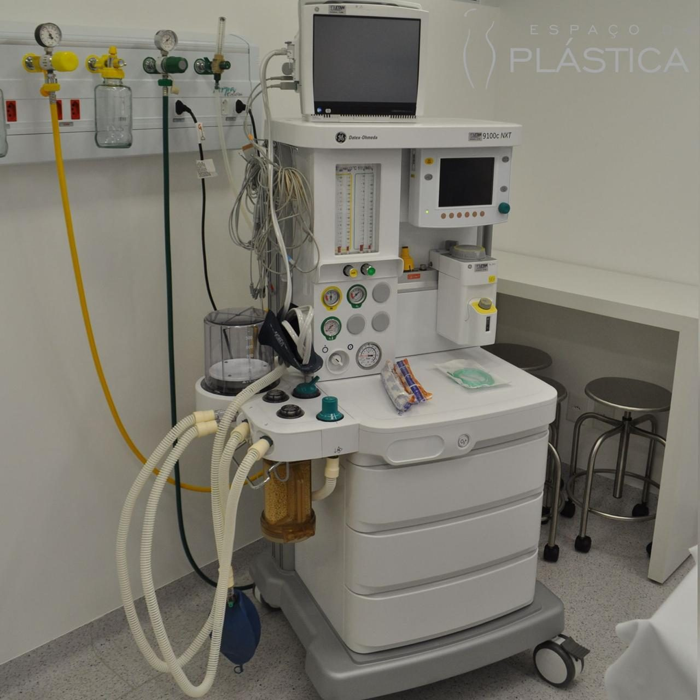

Segurança
Por que operar num hospital dedicado exclusivamente à cirurgia plástica muda a lógica do ambiente — e o que a literatura científica tem a dizer sobre isso.
A lógica
Hospitais gerais fazem de tudo ao mesmo tempo: pronto-socorro, urgências, internações clínicas, doenças infecciosas, cirurgias de toda natureza. Aqui, a lógica é outra — e ela redesenha o ambiente inteiro.
O Hospital Espaço da Plástica não tem pronto-socorro. Não recebe urgências. Não interna doenças infecciosas. Isso não é um posicionamento de marketing: está no registro oficial da instituição — atividades de atendimento hospitalar, exceto pronto-socorro e unidades para atendimento a urgências.
Na prática, todo paciente que cruza a porta veio para um procedimento eletivo: avaliado, planejado e marcado com antecedência. O fluxo é um só. A equipe se prepara para um único tipo de cirurgia. E cada ambiente existe em função dela.

Centro cirúrgico
Anestesia e monitorizaçãoOs pilares
Sem pronto-socorro e sem internação de doenças infecciosas: o fluxo do hospital é 100% cirúrgico eletivo, do agendamento à alta.
Central de material e esterilização dentro do próprio hospital, sob controle direto da equipe — sem terceirizar o que é crítico.
Do bloco à enfermagem, uma equipe que vive cirurgia plástica todos os dias — a mesma rotina, o mesmo padrão, repetido com método.
Avaliação individual, exames e preparo criterioso antes de qualquer decisão cirúrgica. Operar bem começa muito antes do bloco.
Evidência científica
A pergunta “onde operar” já foi medida. Três achados da literatura médica, citados como estão nas fontes — sem atalhos, sem exagero.
Em revisão retrospectiva, a infecção pós-cirúrgica levando a reoperação foi de 0,38% (28 em 7.311 casos) em centro cirúrgico de especialidade única, contra 0,81% (23 em 2.867) em centro multiespecialidade — diferença estatisticamente significativa.
Mitchell et al. · Journal of Orthopaedics · 2013Registro prospectivo de 411.670 procedimentos em centros cirúrgicos ambulatoriais acreditados (2001–2002) documentou infecção em 388 casos — cerca de 0,09%, todas resolvidas com curativo ou antibiótico.
Keyes et al. · Plastic and Reconstructive Surgery · 2004Comparação institucional ao longo de oito anos: a infecção de prótese articular foi de 1,43% no hospital universitário geral e 0,75% no hospital de especialidade dedicado — 0,61% nos dois anos mais recentes do período.
HSS Journal · 2019Como ler esses números. São estudos observacionais: associam ambientes dedicados a taxas menores de infecção — não provam causa e efeito. E vêm de contextos distintos do nosso: centros ambulatoriais norte-americanos e hospitais de ortopedia. Nós os citamos porque são a evidência que a literatura oferece hoje sobre ambientes cirúrgicos de especialidade única — não porque garantam qualquer resultado. Nenhum ambiente zera riscos.
Perguntas frequentes
O ambiente inteiro trabalha em função de um único tipo de cirurgia. Não há pronto-socorro, urgências nem internação de doenças infecciosas: o fluxo é exclusivamente eletivo, planejado com antecedência. A literatura científica associa ambientes cirúrgicos de especialidade única a taxas menores de infecção em comparação com serviços multiespecialidade.
Não. O registro oficial da instituição é de atendimento hospitalar exceto pronto-socorro e unidades de urgência. Toda a estrutura — centro cirúrgico, quartos, esterilização e equipe — é dedicada à cirurgia plástica.
A central de material e esterilização fica dentro do próprio hospital e é operada sob controle direto da equipe. Nada do que é crítico para a cirurgia depende de estrutura externa.
Médicos cirurgiões plásticos, membros da Sociedade Brasileira de Cirurgia Plástica: Dr. Rodrigo Anache Anbar — Médico · CRM/MS 4999 · RQE 3691 — e Dr. Rafael Anache Anbar — Médico · CRM/MS 5000 · RQE 3692.
Toda cirurgia começa por uma avaliação individual com o cirurgião. A partir dela vêm os exames, as orientações pré-operatórias — como a suspensão de determinados medicamentos — e o planejamento do procedimento. Nenhuma decisão cirúrgica é tomada sem esse caminho.
Sim — como todo ato cirúrgico. Complicações, ainda que raras, podem ocorrer, e é exatamente por isso que o planejamento pré-operatório, o ambiente dedicado e o acompanhamento pós-operatório importam tanto. Desconfie de quem prometa o contrário.
Todo procedimento cirúrgico envolve riscos. A avaliação individual com um cirurgião plástico é indispensável.
Agende sua avaliação
Traga suas perguntas. A primeira conversa existe para respondê-las — todas.